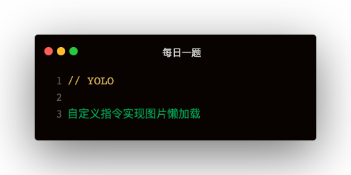

图片懒加载的三种实现方式
scroll事件 + getBoundingClientRect
const imgs = document.getElementsByTagName('img')
const body = document.body
function imgLoad () {
for (let img of imgs) {
const clientRect = img.getBoundingClientRect()
if (clientRect.bottom < (body.scrollTop + body.clientHeight)) {
img.src = img.getAttribute('data-src')
img.style.height = 'auto'
}
}
}
function throttle (func, wait) {
let timer = null
return function (...args) {
if (!timer) {
timer = setTimeout(() => {
timer = null
func.apply(this, args)
}, wait)
}
}
}
document.addEventListener('scroll', throttle(imgLoad, 0))
imgLoad()
InsectionObserver
const imgs = document.getElementsByTagName('img')
const intersectionObserver = new IntersectionObserver(function(entries) {
for (let entry of entries) {
if (entry.intersectionRatio > 0) {
const target = entry.target
target.style.height = 'auto'
target.src = target.getAttribute('data-src')
intersectionObserver.unobserve(target)
}
}
})
for (let img of imgs) {
intersectionObserver.observe(img)
}
浏览器原生支持loading="lazy"
<img loading="lazy" src="https://burst.shopifycdn.com/photos/dog-phone-background.jpg?width=500&format=pjpg&exif=0&iptc=0" />
Vue自定义指令 + 图片懒加载
模版：
<img data-src="..." />
const intersectionObserver = new IntersectionObserver(function(entries) {
for (let entry of entries) {
if (entry.intersectionRatio > 0) {
const target = entry.target
target.style.height = 'auto'
target.src = target.getAttribute('data-src')
intersectionObserver.unobserve(target)
}
}
})
directives: {
lazy: {
inserted: function (el) {
intersectionObserver.observe(el)
}
}
}
directive的钩子函数
- bind：指令第一次绑定到元素时调用
- inserted：元素插入父节点时调用
- update：所在组件VNode更新时调用